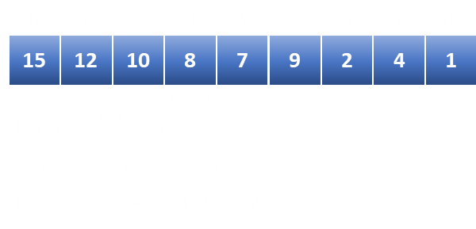

Frank Coelho de Alcantara
Mais uma palavra em inglês que significa pilha, amontoado...
Com o sentido de que coisas estão arrumadas, uma em cima da outra.
Em computação, heap é uma estrutura de dados que tem a forma de uma árvore binária quase completa.
Neste caso a árvore está completa em todos os seus níveis, exceto, talvez, o nível mais baixo.
Forma: uma folha na profunidade $k>0$ só pode existir se todos $2^{k-1} nós da profundidade $k-1$ existirem.
Preenchimento: nós icompletos devem ser preenchidos da esquerda para direita.
Pilha: Cada nó da árvore deve conter um valor maior ou igual ao valor dos seus filhos.
Graças a rigidez das propriedades, um heap pode ser armazenado em um array.
Sem perder nenhuma informação estrutural.
O array $A$ que representa um heap possui duas propriedades: comprimento $A.comp$, que indica o número de elementos deste array e o tamanho do heap $A.heap$ que indica quantos elementos do heap estão no array. Isso quer dizer que mesmo que o array $A$ tenha um comprimento determinado, apenas os elementos localizados entre $A[1]$ e $A[heap]$ são elementos do heap. De tal forma que: $$0 <= A.heap <= A.comp$$
Na forma de array a raiz será sempre o primeiro nó do array $A[0]$. Dado um nó $i$ qualquer, que não seja a raiz. Seu filho da esquerda pode ser encontrado por $2i$, o filho da direita por $2i+1$ e seu pai por $(i-1)/2$
Dado um conjunto qualquer de dados, primeiro precisamos organizar estes dados, dentro do próprio array, seguindo a ordem indicada para que este array seja a correta representação de um heap. Vamos chamar esta ação de construir.
Uma vez que o heap tenha sido construído, precisamos ordenar este array. Faremos isso dividindo este arry em dois e chamando a função de ordenação de forma recursiva.
Você pode baixar o material de apoio clicando aqui
AHO, A. V. et al.
Compiladores: princípios, técnicas e ferramentas.
2º. ed. Boston, MA, USA: Pearson Education Inc. , 2007.
CASS, S. The 2016 Top Programming Languages. IEEE
Spectrum, 2016. Disponível em: